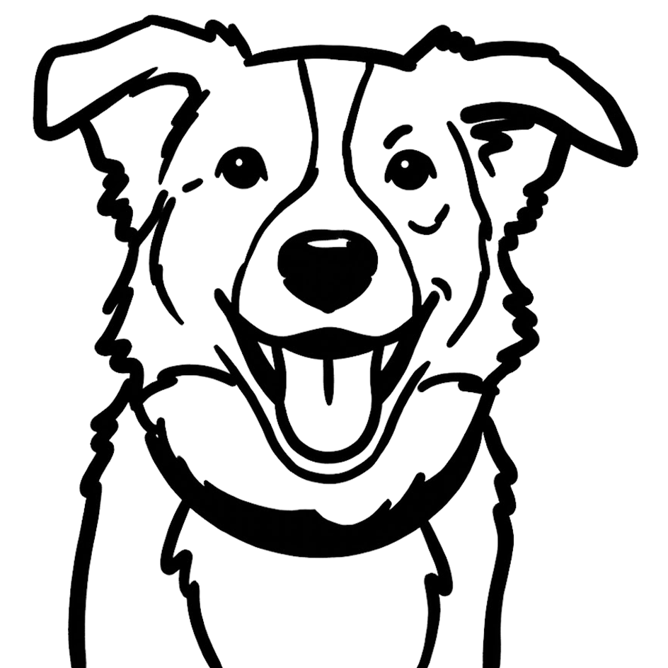

Next project
Webdesign / UI/UX
Puro Petfood
Clear product structuring and a playful yet trustworthy UI help pet owners effortlessly find the right nutrition for their dogs and cats.

The Challenge & Approach
Every pet owner wants the absolute best for their dog or cat, but navigating pet food options can feel overwhelming. The goal for Puro Petfood was to create a webshop interface that strikes the right balance: approachable, playful, and joyful, without sacrificing clarity or professional credibility.
As part of the design team at Yooker, I was responsible for designing key core templates and user journeys, including the homepage, primary navigation, product listing, detail pages, and custom interactive tools.
Core Feature: The Food Finder ("Voervinder")
The cornerstone of the platform is the interactive Food Finder. To eliminate choice stress for pet parents, I designed a multi-step quiz flow that guides users through a few simple questions about their pet’s age, breed, and health requirements.
By keeping the interface lightweight, visual, and friendly, users are seamlessly guided toward tailored nutrition advice, increasing both buying confidence and conversion.
E-commerce & Detail Pages
On the product overview and detail pages, the primary focus was hierarchy and clarity. Important nutritional details, ingredients, and purchasing options were structured to be digestible at a glance, using consistent spacing and component patterns to maintain a cohesive brand feel throughout the entire funnel.